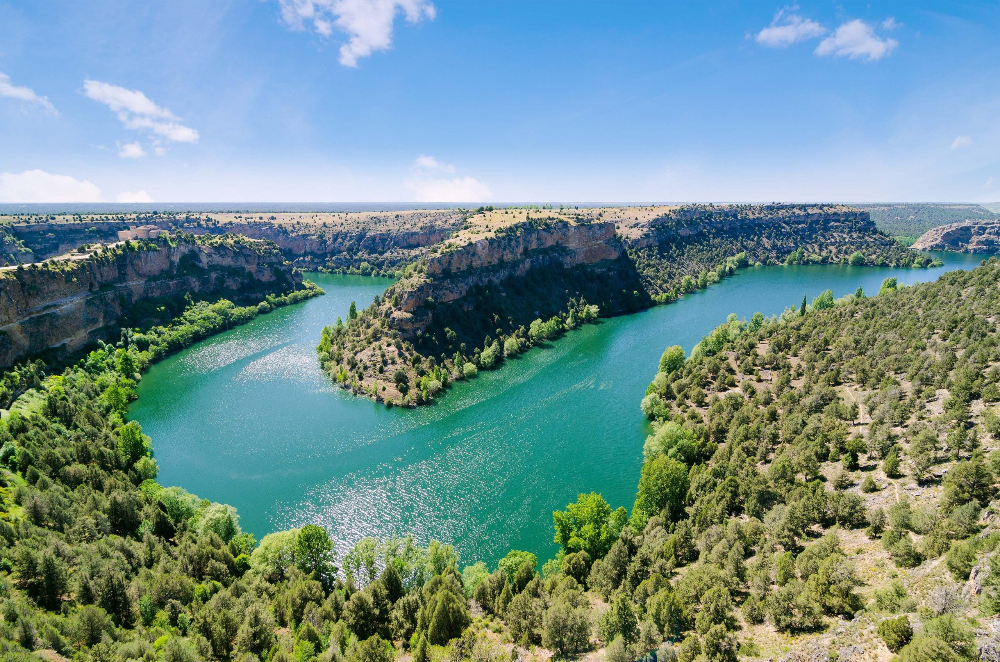

Equipamiento de la casa
La vivienda tiene capacidad para 8 personas distribuidas en dos plantas:
- 4 habitaciones dobles con baño privado y calefacción.
- Salón amplio con chimenea de leña, televisión y juegos de mesa.
- Cocina totalmente equipada (lavavajillas, horno, microondas y cafetera).
- Patio exterior ajardinado con porche y barbacoa cubierta.

Tarifas 2026
Los precios corresponden al alquiler íntegro de la casa rural:
| Temporada | Fin de semana (2 noches) | Noche adicional | Semana completa |
|---|---|---|---|
| Temporada Baja (Nov - Mar) | 320 € | 140 € | 850 € |
| Temporada Media (Abr - Jun / Sep - Oct) | 380 € | 165 € | 990 € |
| Temporada Alta (Jul - Ago y Puentes) | 450 € | 195 € | 1.180 € |